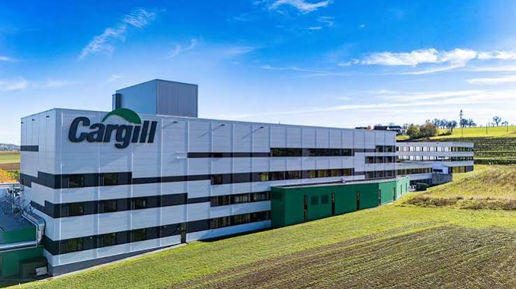
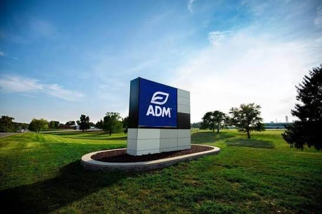
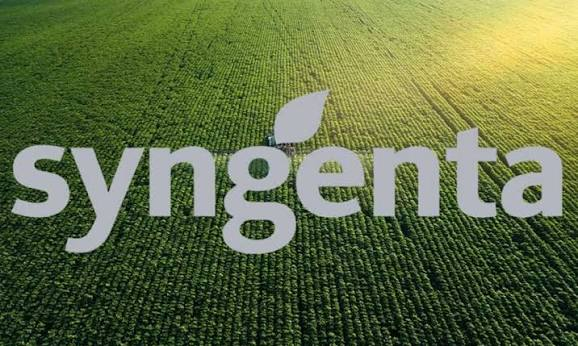
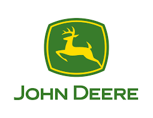
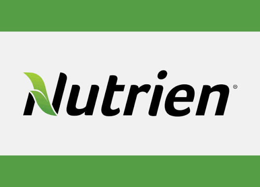

Descubre los colosos responsables de la biotecnología, maquinaria pesada, fertilizantes y distribución global de alimentos que nutren a más de 8 mil millones de personas.
+ $350B
Ingresos Combinados Anuales
+150
Países con Operaciones
8.000M
Personas Beneficiadas
1837
Pioneros desde el S. XIX
Líderes de mercado, sedes mundiales y estructuras de propiedad.

Estados Unidos
Aporte al mundo agrícola: Es el mayor comerciante privado de granos, oleaginosas y materias primas agrícolas del mundo. Procesa proteína animal, nutrición para ganado y conecta a agricultores de más de 70 países con mercados globales de exportación.
Sede Central (Ubicación):
Minnetonka, Minnesota, Estados Unidos.
Fundadores y Propiedad / Dueños:
Fundador: William Wallace (W. W.) Cargill en Iowa (1865).
Dueños Actuales: Es una de las corporaciones privadas más grandes del mundo. Aproximadamente el 88% de la empresa permanece en propiedad de los herederos de las familias Cargill y MacMillan.

Estados Unidos
Aporte al mundo agrícola: Líder global en la transformación de cultivos de maíz, soya y semillas oleaginosas en aceites comestibles, harinas proteicas, biocombustibles e ingredientes esenciales para la nutrición humana y animal.
Sede Central (Ubicación):
Chicago, Illinois, Estados Unidos.
Fundadores y Propiedad / Dueños:
Fundadores: George A. Archer y John W. Daniels como un negocio de trituración de lino.
Dueños Actuales: Empresa de capital abierto listada en la Bolsa de Nueva York (NYSE: ADM). Sus accionistas mayoritarios son grandes fondos institucionales globales como The Vanguard Group, BlackRock y State Street Corporation.

Suiza / China
Aporte al mundo agrícola: Gigante mundial en protección de cultivos (pesticidas, fungicidas, herbicidas) y tecnología genómica de semillas híbridas de alto rendimiento que aseguran la producción frente al cambio climático.
Sede Central (Ubicación):
Basilea, Suiza (Sede Global) y Pekín, China.
Fundadores y Propiedad / Dueños:
Origen / Fundadores: Nació en el año 2000 fruto de la fusión de las divisiones agrícolas de Novartis y AstraZeneca.
Dueños Actuales: Adquirida en 2017 por $43.000 millones. Actualmente es una subsidiaria de propiedad total del conglomerado estatal multinacional ChemChina / Sinochem Holdings Corporation (propiedad del gobierno chino).

Estados Unidos
Aporte al mundo agrícola: Ícono de la mecanización agrícola. Fabrica tractores autonómicos, cosechadoras con sensores IA, sembradoras de precisión e integración de datos por satélite para agricultura inteligente.
Sede Central (Ubicación):
Moline, Illinois, Estados Unidos.
Fundadores y Propiedad / Dueños:
Fundador: John Deere, herrero e inventor del primer arado de acero pulido de autolimpieza.
Dueños Actuales: Empresa pública cotizada en Wall Street (NYSE: DE). Sus principales dueños son inversores institucionales de gran escala como The Vanguard Group, BlackRock y Cascade Investment (la firma de inversión privada de Bill Gates).

Canadá
Aporte al mundo agrícola: El mayor proveedor del mundo de nutrientes agrícolas esenciales: Potasa (K), Nitrógeno (N) y Fosfato (P). Además posee una red minorista de más de 2.000 tiendas de servicios para agricultores.
Sede Central (Ubicación):
Saskatoon, Saskatchewan, Canadá.
Fundadores y Propiedad / Dueños:
Origen / Fusión: Creada mediante la mega-fusión de PotashCorp (Corporación de Potasa de Saskatchewan) y Agrium Inc.
Dueños Actuales: Cotiza públicamente en las bolsas de Toronto (TSX) y Nueva York (NYSE: NTR). Pertenece a fondos de pensiones e inversores institucionales globales como Royal Bank of Canada, Vanguard Group y Norges Bank Investment Management.
Obtén la temperatura de tu zona y recomendaciones biológicas para tus cultivos.
--
Toca en "Detectar Mi Ubicación" o consulta abajo las pautas térmicas de siembra según la temperatura estacional actual.
10°C - 18°C (Clima Templado/Frío)
Trigo, Cebada, Avena, Espinaca y Zanahorias. Meses óptimos: Otoño / Primavera temprana.
19°C - 32°C (Clima Cálido)
Maíz, Soya, Girasol, Tomates y Algodón. Meses óptimos: Primavera / Verano.
Estimación de producción, ahorro hídrico y rendimiento tecnológico por hectáreas.
0 Tn
Toneladas Métricas0 L
Litros vs Tradicional$0 USD
Mercado de GranosEl uso de semillas modificadas de Syngenta con fertilización optimizada de Nutrien y maquinaria automatizada de John Deere puede elevar la productividad hasta un 35%.
Obtuviste 0 de 50 puntos.